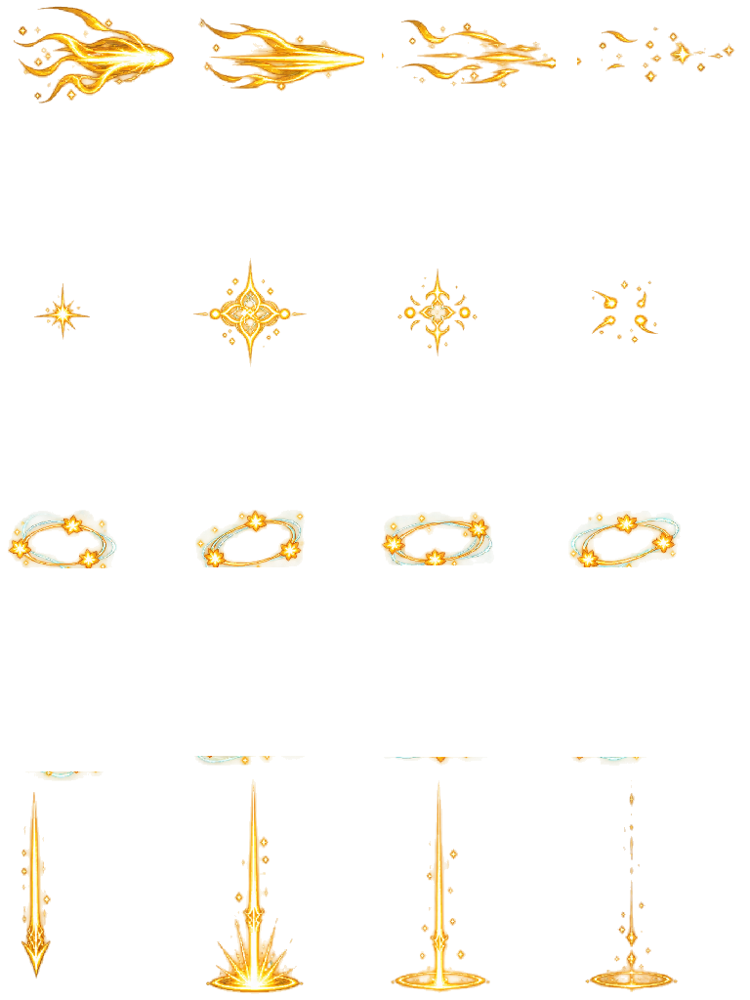

NAM ĐẾNHẤT ĐĂNG ĐẠI SƯ · ART DEMO v02
ĐẠI LÝ PHONG HUYỆT
10 phím · 5 giây · Được bảo hộ khi bị khóa
← ↑ ↓ → Di chuyển · A thử đánh · Space dừng · H ẩn UI
HP minh họa 100% · Chưa tích hợp combat/server
HP minh họa 100% · Chưa tích hợp combat/server
0.0s
Sprite nhân vật được giữ nguyên
208 frame · 52 clip · bốn hướng · chân (80,88) / canvas 160×112. VFX mới là prototype chờ duyệt.

16 frame VFX bổ sung

Đang nạp sprite và arena…